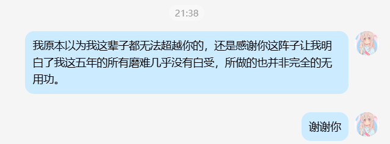

番茄🍅
@bcfqdtfqz
虽然我很讨厌优绩主义，但是用魔法打败魔法真是他妈的爽啊，甚至回顾到一半她之前对我做的所作所为，在看到她现在这样，就算很能沉得住气的我都直接忍不住轻哼起来

番茄🍅
@bcfqdtfqz
没想到当年印象中接近完美的初恋也是差不多混吃等死的状态，原定计划的时间表提前了20年，接近癫狂的一下午也在思考接下来的目标是什么。
有一说一，有点能理解李新野现在什么心理状态了 https://t.co/cA4KVYCOSa